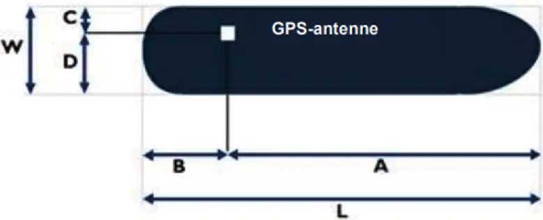
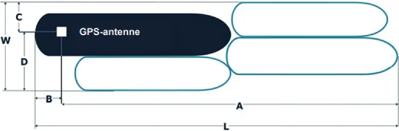
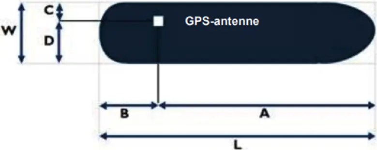
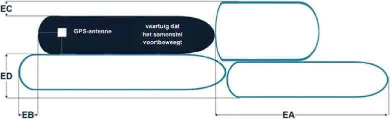

2 Referentiepunt voor de positie-informatie op het vaartuig
Rijnvaartpolitiereglement 1995
2.1. Als het Inland AIS-apparaat voor 1 december 2015 aan boord is ingebouwd:
a) In geval van een vaartuig
De schipper moet de aan de antenne gerelateerde waarden A, B, C en D met een nauwkeurigheid van 1 m invoeren.
Waarde A wordt in de richting van de boeg gemeten.

Verklaring van de waarden W, L, A, B, C en D voor een vaartuig
b) In geval van een samenstel
De schipper moet de aan de antenne gerelateerde waarden A, B, C en D met een nauwkeurigheid van 1 m en de waarden W en L met een nauwkeurigheid van 0,1 m invoeren.
Waarde A wordt in de richting van de boeg gemeten.

Verklaring van de waarden W, L, A, B, C en D voor een samenstel
2.2. Als het Inland AIS-apparaat vanaf 1 december 2015 aan boord is ingebouwd:
a) In geval van een vaartuig
De schipper moet de aan de antenne gerelateerde waarden A, B, C en D met een nauwkeurigheid van 0,1 m invoeren.
Waarde A wordt in de richting van de boeg gemeten.

Verklaring van de waarden W, L, A, B, C en D voor een vaartuig
b) In geval van een samenstel
De schipper moet de aan de antenne gerelateerde waarden EA, EB, EC en ED met een nauwkeurigheid van 0,1 m invoeren.
Waarde EA wordt in de richting van de boeg gemeten.

Verklaring van de waarden EA, EB, EC en ED voor een samenstel